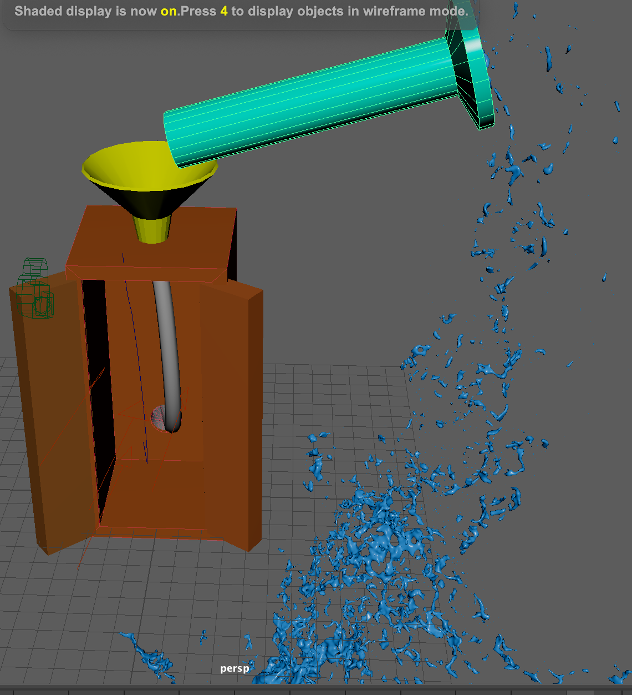

Introduction
Durrnig MP4, we did multiple projects centered around genetics in our Media & Tech class. We did a multistep expement to find out what our DNA looked like, made a stop motion video about the discovery of DNA, and made a video and Adobe Premire to tell the story to the world. In this webpage, you will find out about what I did, how I did it, and what I lerned durring MP4.
DNA expeiment
We spent about 2 weeks doing a project that would eventually let us look at our DNA and compare it to others. The first step was to get some of our DNA. To do this we used a toothpick to swab the inside of our check and collect some of our cells. We then combined that with a fluid called extraction buffer and put in a machine called a heat block. The heat block would get very hot and burst the cells open to access the DNA. We then took a tiny amount of the DNA fluid and mixed it with PCR mix, bases, and primers, before putting it in a PCR machine. The PCR machine would heat up to split the DNA strands, then cool off so they would combine with the primers, which are set DNA strands we ordered from a lab. By doing this we can duplicate the DNA strands. The PCR machine does this about 30 times and we end up with over a million copies of our DNA. Next we do a step called gel electrophoresis. We make a special gel by mixing water and gelatin, heating it, and then putting it in a mold. We also put a custom plastic piece in the gel as it cools so we have spaces to put our DNA fluid. After the fluid is done in the PCR machine, we carefully put it in the holes in the gel, making sure not to spill it. We then put the gel in a liquid called electrophoresis buffer which is extremely electrically conductive. Then we run an electric current through the gel. Because DNA is electrically conductive, the current pulls it through the gel, with smaller pieces getting pulled further. After this has finished, we can see how far our DNA has been pulled, and by counting this and comparing it to others, we can see who we’re related to.
Stop Motion video
As part of the project, we had to make a stop motion video about the story of the discovery of DNA. Our roughly 2 minute stop motion video tells the story of how James Watson stole fellow scientist Rosalnad Franklin’s work and made the discovery of the double helix using the data she had worked for years to collect and he had gained access to without her knowledge or consent.
Reasoning part 1
This data was collected by pouring in the “amount in” through a graduated cylinder, collecting whatever came out, and measuring that amount in the same graduated cylinder to get the “amount out” measurement. Therefore, the only reason for the huge differences between amount in amount in and amount out is due to the box.
Reasoning part 2
The reason my evidence supports my claim is because of the vast differences between the amount of water poured in and the amount of water that came out. If there was just a tube going from the starting point to the exit point, we wouldn’t have these ridiculous differences between input and output in our tests. This is why I believe that there is a bucket or container somewhere. I think that that bucket fills up as you pour more and more water into it, and then tips and lets it all out. This would explain why sometimes you get less water out than in and vice versa. Sometimes you pour a lot in and none comes out because the bucket is filling up. But sometimes you only pour a little in and get a lot out because that little bit was the little bit needed to fill up the bucket.
If the opposite claim were true, there would be no bucket/container, and there would just be a tube connecting the entrance to the exit. This would lead to a lot more predictable (and some would say, boring) results. We wouldn’t get the huge differences in input and output, because there is nothing in the box that holds water or can release a lot of it at once. Instead, you would always get out the exact amount of water you poured in.
Photography was a significant part of physically building the black box. Each member had to take three photos, using rule of thirds, framing, and angles. For rule of thirds, our camera screen was divided into a tic tac toe board and we were told to have the most important part of the photo (like a funnel, a tube or a hand) on a line or at the spot where two lines intersect. This was to make the photos more interesting. Framing is how zoomed in or out you are in a scene. This can help convey what you want the audience to know. Zoomed out means “where”, while zoomed in means “who”. Lastly, we used angles. Taking a picture with the camera below the person makes them appear powerful and big. Meanwhile taking a picture with the camera above the person does the opposite.
During this project, photoshop played an important role in figuring out what we wanted the internal parts of the box to look like. Did we want 2 tubes, did we want multiple buckets, did we want loops? By using photoshop, we were able to map out what we wanted it to look like before we actually built it. To do this, we used the drawing tools to make pipes, buckets, loops etc. We used different colors to tell things apart and different thicknesses to figure out what was most important. Doing this allowed us to have a “sketch” to work off when doing the physical building, and know what materials we needed ahead of time.
Maya was my favorite part of the project because everything was new. I had never used it before so I got to learn how to make amazing things. This was the most important, and most impressive part of the project. Over about a month, we had to take what we had built, and put it in MAYA. This meant building the box, the funnel, the water, the tubes. It was so interesting to see how they worked. It also felt so cool that I was able to use the program that was also used to make some of my favorite movies when I was younger. Maya let us take our build, and put it in a different dimension.
I think that the 21st century skill I demonstrated the most was “creativity and innovation.” The main reason is because we had so much freedom during this project. We got to choose what we thought was in the box, and therefore what we wanted to put in our box. We got to (more or less) choose how to make it in MAYA. We had so many decisions to make ourselves that I had to be creative and innovative. As I said before, one criteria I used this skill a lot in was figuring out what would go in our black box. We had to guess what was in the real one, and to do that we had to be creative. Were there tubes inside, was there a bucket, was there a water wheel, were there other weird elements. One specific example is when I had the idea to make our one tube split into two, because I thought it would look cool and yield interesting results. In the end, creativity and innovation were essential parts of this project, and I think I used them a lot, and grew in them.

The things we used to make it include...
| Trial | Water Input | Water Output |
|---|---|---|
| 1 | 1000 | 0 |
| 2 | 100 | 1940 |
| 3 | 1000 | 370 |